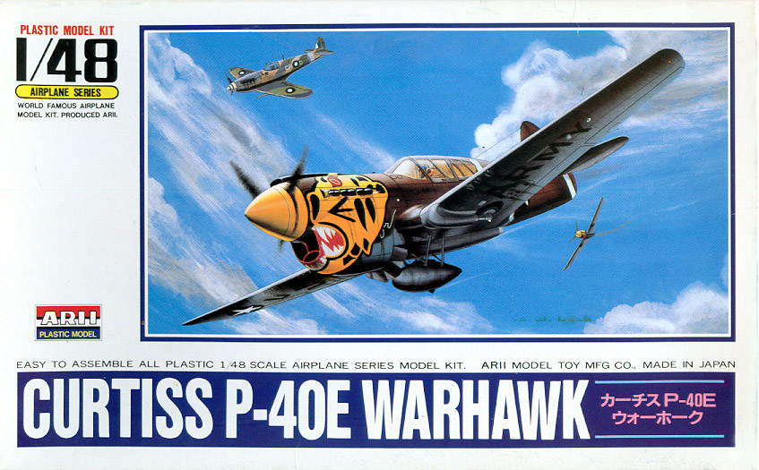
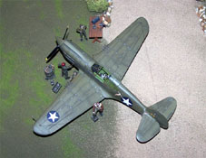

{kind=link}
{kind=link}
{kind=link}

You may click on the small images to view larger pictures
Arii 1/48 P-40E Warhawk

Kit #A332-800 Collector�s Market Value $12.00
Images and text Copyright � 2005 by Matt Swan
Developmental Background
America's foremost fighter in service when WWII began was the Curtiss-Wright P-40. Initially a derivative of the radial engine P-36 pursuit plane that first flew in 1935, it was upgraded three years later with the installation of an Allison liquid-cooled V-12 engine and redesignated P-40. This streamlined the aircraft and allowed it to achieve airspeeds in excess of 300 mph. The D model included an armament package of four fifty-caliber machine guns with two mounted in each wing. As early reports of the war filtered back to Curtiss they increased the armament package to six fifty-caliber guns with three in each wing. A slightly more powerful engine was added and this became known as the E model. Some E models included small underwing bomb shackles. Approximately 2,320 aircraft of this variant were produced.
The P-40 served in numerous combat areas--the Aleutian Islands, Italy, the Middle East, the Far East, the Southwest Pacific and some were sent to Russia. P-40s engaged Japanese aircraft during the attack on Pearl Harbor and the invasion of the Philippines in December 1941. They also were flown in North Africa in 1943 by the first AAF all-black unit, the 99th Fighter Squadron. The most widely known P-40 operations were those of the American Volunteer Group in Burma during early 1942, the famed Flying Tigers. P-40s became known as the Tomahawk, the Kittyhawk, and finally the Warhawk in different theatres. Warhawk was the name the USAAF adopted for all models, thus it is the official name of the airplane series as a whole.
RAF No. 112 Squadron was the first to fly Tomahawks in the Western Desert of Africa, mainly for ground attack. The squadron copied the famous shark mouth markings under the spinner from Luftwaffe Messerschmitt Bf 110 Zerst�rer units. This type of marking was later borrowed from the British by the AVG for use on their aircraft. Another well know piece of aircraft air came from the AVG when they asked the Disney studios in California for a unique cartoon symbol to adorn their planes and were provided with a winged tiger leaping through the air.
Though often outclassed by its adversaries in speed, maneuverability and rate of climb, the P-40 earned a reputation in battle for extreme ruggedness. The AVG developed hit and run tactics against the Japanese in China that utilized the weight of the aircraft in a diving attack. Wherever the Allies maintained air superiority the Warhawk was used very successfully in a ground attack mode. The final production model was the N with a stretched rear fuselage, larger engine and improved pilot visibility. This was the lightest production version of the aircraft and also featured a reduced armament package of four Brownings. In a final effort to refine the design a Q model was developed with a 4-bladed prop, cut-down rear fuselage and bubble canopy, supercharger, squared-off wingtips and tail surfaces, and improved engine. The P-40Q was the fastest of the P-40 series, boasting a top speed of 422 mph but its performance was not enough of an improvement to merit production when compared to the current late model P-47Ds and P-51Ds pouring off the production lines.
The P-40 remained in production from 1939 to the end of 1944 and more than 14,000 had been produced for service in the air forces of 28 nations, of which 2,320 were of the "E" series. Today many P-40s are still flying and can be found at air shows and museums around the world.
The Kit
There is no shortage of P-40 kits on the market. They run from the nearly pure crap Starfix kits to the early Monogram P-40B and all the way to the high dollar Planet Models XP-40Q. Virtually every version of the P-40 has been kitted at one time or another and each kit has it�s own peculiarities. Today I want to look at the Arii P-40E. This kit has been repackaged under the Otaki name tag and even under the AMT tag briefly. This is an inexpensive kit that can be built into a very nice model with just a little work.
Inside the box we have three large trees of parts done in a soft blue/gray injection molded polystyrene. When this kit was initially manufactured in the 1970�s the industry standard was to use raised panel lines but Arii traveled their own road and designed this kit with finely recessed panel lines and rivet detail. All the exterior pieces show this fine detail combined with a nice, smooth finish and no mold flash or sink holes. All the pieces fit together very nicely and show no evidence of warpage even after setting in a box for over thirty years. Interior detail is fairly good also even by today�s standards. The cockpit sidewalls have some basic detailed molded in place, the dash features raised instrument faces but not much fine detail. The pilot�s seat is very basic with the kit being intended built with a pilot in place. If you want to build this sans pilot then some foil seatbelts would be a good addition. The pilot figure is a direct copy of the early Monogram seated figure found in virtually every early Monogram kit.
This kit comes with an engine � something that was uncommon for the time period for most manufactures but Arii seemed to try to do it with all of their kits. The engine is basic but has good surface detail. You only get two pieces for the engine itself along with two mounting arms and a decently detailed firewall but the foundations are there if you want to take it up a notch (we�re talking AMS here). As a modeler you get the option of loading this aircraft with a bomb or an external fuel tank. Landing gear and radiator details are adequate and the clear parts are nicely done with well defined frame lines and good clarity. The only draw back to these pieces is that the canopy is molded closed and to open it you will have to get an aftermarket set. Looking at the pictures below the one at the far right is a comparison of this kit fuselage to two other prominent kits on the market. At the top we have the recently released Trumpeter P-40B, in the middle is the AMT (not the rebox of the Arii) P-40E which is also used by AM Tech for their P-40F conversion and at the bottom is the Arii fuselage.
Taking an inventory we have fifty nine pieces in soft blue/gray plastic and three pieces in clear polystyrene for a total of sixty two pieces in the box.
You may click on the small images to view larger pictures
Decals and Instructions
The instructions for this kit are primarily in Japanese with some English subtitles. It�s a basic two panel fold-out sheet but does have very good exploded view diagrams. There appear to be several color call-outs throughout the instructions but any paint charts they might relate back to are in Japanese so the modeler really needs to rely on outside reference material for all interior painting. The instructions show decal placements for three different aircraft, the kit includes a full color profile for two aircraft but we only get decals for one.
The kit decals are for the aircraft pictured on the box art from the 343 Fighter Group, 11th Air Force. The decals as such are not too bad, they have good color density and good print registry. They do not appear to be overly thick but are basic in nature. Other than the Curtiss prop stencils there are no other service stencils or warning markings. I think that an aftermarket decal sheet would be a good move here or at least a trip to the spares box for some additional markings.
Conclusions
While this kit does have it�s deficiencies it is still a good starting point for a well priced model of the P-40E. Yes the decals and canopy could use to be replaced and as I said in the beginning, there is no shortage of P-40 kits on the market. I took a look at a couple of Internet Hobby Shops and searched 1/48 P-40 and came up with no less than 154 items on one, 81 at another and 146 at another. You can build this right out of the box and have a nice model, with just a little extra work you can leave the hood off and show a relatively nice engine or you can spend some bucks and satisfy the deepest AMS cravings imaginable. Either way this kit is a pretty good place to start and I feel it makes a good addition to any aircraft collection � after all, you can never have to many P-40s.
Construction
12/26/05
I�ve been involved in some pretty serious builds recently and felt the need to do something quick and simple. While sitting staring at the stash one afternoon I flipped through a pile of aftermarket decals and came across a set from Pyn-Up for a P-40E and suddenly my choice of modeling subject was made. I�m writing this on the 26th and this decision was made on the 22nd, four days ago. Construction begins in a very straight forward manner with the cockpit and interior areas. Back when I did the original review of this kit I had acquired the Squadron replacement canopy which will be used in the build. I also had picked up the Ultracast seat to replace the dismal piece in the kit. As I began construction I noticed right away that the control column was really a piece of crap and had to go to the spares box in search of a replacement. Fortunately I was able to find a stick that looked good, no telling where it came from originally but I was happy to have it.
So all the interior pieces got a primary coat of Interior Green then details were brush painted. At the right you can see what a difference the Ultracast seat is going to make for this build. Now this kit includes an engine and removable side panels. Also, the engine and its mounting hardware attach directly to the firewall that is part of the cockpit. Here I have to make a decision on just how far I want to go with this build. Do I want to detail this engine or just keep it simple, either way the engine has to go in because it holds the shaft for the propeller. I did some quick research on the V1710 engine and compared images to the kit piece � not very accurate. I did say I wanted something quick and simple so the engine will not be detailed and the side panels will be glued shut. If I was going to detail the engine compartment I think I would look for an aftermarket engine rather than trying to salvage this piece. Now that that decision has been made I can move along with the cockpit. The original mounting hole for the column is filled in (was too far back anyway) and the new column is glued in with the new seat dry fit in place. The dash has all the raised instrument face detail shaved off and is painted flat black. Once this dries Mike Grant instrument decals are placed on each face. Side walls are detailed by brush without a lot of concern for additional detailing as you won�t be able to see much in there anyway. The interior gets a good coating of sludge wash and once that is dry details are highlighted with a dry brush of silver and steel.
Once all this has dried enough to handle the seat is placed with a couple drops of superglue. The engine halves are assembled and given a quick coat of paint then attached to the firewall with the kit mounting hardware. While the glue is still soft I dry fit the entire assembly to the fuselage to make sure the propeller shaft is going to be properly positioned. I�ll let the glue harden up for a few and play with something new � I have a bottle of Model Master Lacquer paint Burnt Iron and will be testing this on the exhaust shrouds. These are taken to the paint room and given three light coats. I find this paint behaves very much like the Alclad paints and has a good color to it. We�ll be taking a look at the finished exhausts later on. Back to the modeling table and the fuselage halves go together with some Tenax 7R.
That pretty much covered the first day of work. The next day (off from work for the holiday � Woo Hoo!!!) the wing panels are glued together and set aside. The tail planes are cleaned up and attached to the model. I filled the interior of the cockpit with tissue paper and the engine compartment as well. I don�t want to glue the engine panels in place until after they are painted so I can install those exhaust shrouds first. The clear side panels for the canopy will be used as the Squadron set only includes the front two pieces. The kit pieces are dipped in Future and set aside under cover to cure. The fuselage heads back to the paint room to have some interior green shot into the side panel areas that will be covered by the cockpit glass.
The glue is set up on the wings now and the seams can be cleaned up. They head to the paint room next to have the wheel well areas shot with Interior Green. The gear covers are assembled and glued onto the wing lower surfaces. Now the wing is attached to the fuselage. Some sanding is required here with a diamond needle file to get the rear edge of the wing to set properly then everything is glued together. Some Mr. Surfacer 500 is applied to the various seams that need help and along the front of the wing joint. This sets up within an hour or so and is wet sanded smooth. I usually work on three or four builds at any given time and this is the point in this modeling day where this kit gets set aside and work continues on something else.
Day three; the model is inspected for any issues that need to be fixed then she heads to the paint room for some primer. I�m using Mr. Surfacer 1200 cut about 30% with lacquer thinner and air pressure set at about 18psi. The model is completely primed and allowed to cure for an hour. Next some Testors flat black is thinned out about 50% with lacquer thinner, my airbrush pressure is dropped to around 8psi and all panel lines on the model are pre-shaded with black. I usually use a dark brown for this step but with the dark top colors I planning on I want this black for the pre-shade. This gets another hour or so to cure then the under surfaces are painted with Model Master Neutral gray and so ends day three on this build.
Day four; the lower surfaces are masked off and the upper surfaces are painted with Model Master Olive Drab. Once the primary color has been applied I add a small amount of white to my paint and lighten a few of the upper panels. Back she goes to the model table and the tissue packing is removed. The cockpit edges are touched up with Interior Green and the anti-glare area of the dash is done with flat black. This will dry for most of the day and get a coat of Future later this evening. So here we are just four days into this build and she is almost ready for some decals � now I think that qualifies as fast and simple.
You may click on the small images above to view larger pictures
12/31/05
Day four continued with the decals being placed later that evening then sealed with another coat of Future. Day five the propeller and spinner hub are mounted on toothpicks and painted. The canopy is being masked and I am looking at the wheels. A fellow modeler (Rick) who has built this kit before warned me that he felt the landing gear struts were long and would give the model a poor stance. I hauled out my little steel ruler and started taking some measurements and sure enough Rick was correct. The Arii kit legs are approximately 2.5mm long. The images below show my corrections to the gear legs. Using thin strips of masking tape I created new upper stop points on both legs (A) and sealed the tape with a fine spot of superglue. The old stop points were shaved off so now when the legs are inserted into the mounting holes in the wings they will just slide in 2.5mm further than before. I also added some brake lines from Magnet wire (B) and created tie downs for them with more strips of masking tape (C). Dark brown was used to paint the brake cables and Burnt Iron for the tie downs.
Day six was just too hectic on the mundane front and I was not allowed to model (oh the horror). Day seven the landing gear is put in place, the propeller is mounted and the weathering continues with a sludge wash followed by a coat of Polly Scale clear flat. While this dried I looked at the kit interior gunsight which really sucks. Going back to my experience with the IAR-80 build I quickly knocked together a new gunsight and superglued that in place. The exterior gun sights also look like crap so I dug around in my PE spares box and found a couple of pieces that would work well as replacements. The masked forward canopies were airbrushed Interior Green followed by Olive Drab then attached with Testors Clear Parts Cement. Crushed pastel chalks were rubbed in to create gun blast stains and exhaust stains. With a sharp piece of chalk I created some oil stains around the lower engine hatches and rubbed them with my finger tip to blend them a bit. I modified the kit bomb to be an antipersonnel bomb. All I really did here was stamp out a thin disc of plastic from some stock sheet with my Waldron Punch and mount it to a thin piece of round rod onto the nose of the bomb. The final details are the antenna made from invisible thread drawn across a black marker and attached with spots of super glue.


You may click on the small images to view larger pictures
As for the figures, the standing Pilot and the African Mechanic are both from a 1/48 Preiser set, one tool box is from a Luftwaffe Preiser set and the other is from a US Personnel Preiser set, the table and bucket is from an ICM set, the kneeling mechanic is from a Monogram kit and the second standing mechanic is from an old AMT B-26B kit. The drum is from Verlinden. I have something like 200 various figures and support pieces all painted up and standing by for diorama purposes as needed. I also have a habit of chopping these guys up and putting them back together to obtain different poses as needed.
So there it is, something quick and simple. I spent about $10.00 on the kit and around $20.00 for aftermarket pieces. These old Arii kits are sure a lot of fun and well worth every dollar spent.


{kind=link}
{kind=link}
{kind=link}
{kind=link}
{kind=link}
{kind=link}
{kind=link}
{kind=link}